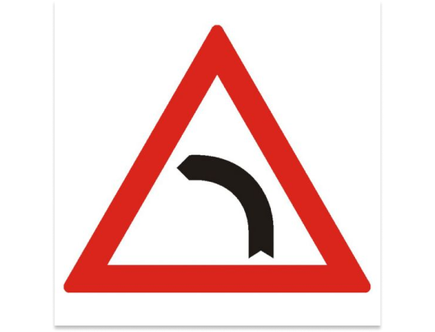

<!DOCTYPE html>
<html lang="en">
<head>
    <meta charset="UTF-8">
    <meta http-equiv="X-UA-Compatible" content="IE=edge">
    <meta name="viewport" content="width=device-width, initial-scale=1.0">

    <link rel="stylesheet" href="styles/scroll-bar.css">
    <link rel="stylesheet" href="styles/global.css">
    <link rel="stylesheet" href="styles/navbar.css">
    <link rel="stylesheet" href="styles/big-card-page.css">

    <link rel="preconnect" href="https://fonts.googleapis.com">
    <link rel="preconnect" href="https://fonts.gstatic.com" crossorigin>
    <link href="https://fonts.googleapis.com/css2?family=Poppins:ital,wght@0,100;0,200;0,300;0,400;0,500;0,600;0,700;0,800;0,900;1,100;1,200;1,300;1,400;1,500;1,600;1,700;1,800;1,900&display=swap" rel="stylesheet">

    <title>RoT</title>
</head>
<body>
    <nav id="navbar" class="navbar"></nav>

    <main id="main">
        <!-- <div class="big-card card--gradient-red">
            <div class="big-card__image">
                
            </div>
            <div class="big-card__text">
                <p>Indicatorul rutier se întâlnește înainte cu cel mult 
                    200 de metri de o curbă la stânga.
                    La întâlnirea indicatorului, reducerea vitezei nu este obligatorie dar. 
                    </p>
            </div>

            <div class="big-card__buttons">
                <a class="big-card__button " href="#">Înapoi</a>
                <a class="big-card__button " href="indicatoare_specifice.html">Indicatoare</a>
                <a class="big-card__button " href="#">Următorul</a>
            </div>
        </div> -->
    </main>
    <script src="scripts/nav.js"></script>
    <script src="scripts/mock_jsons/indicatorare.js"></script>
    <script src="scripts/indicator.js" ></script>
</body>
</html>